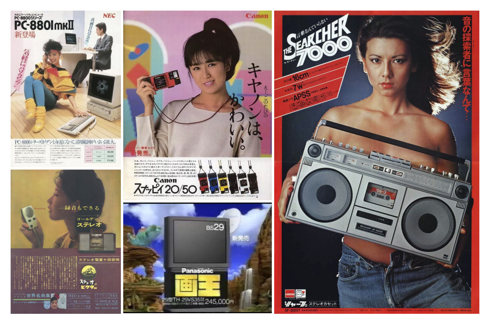
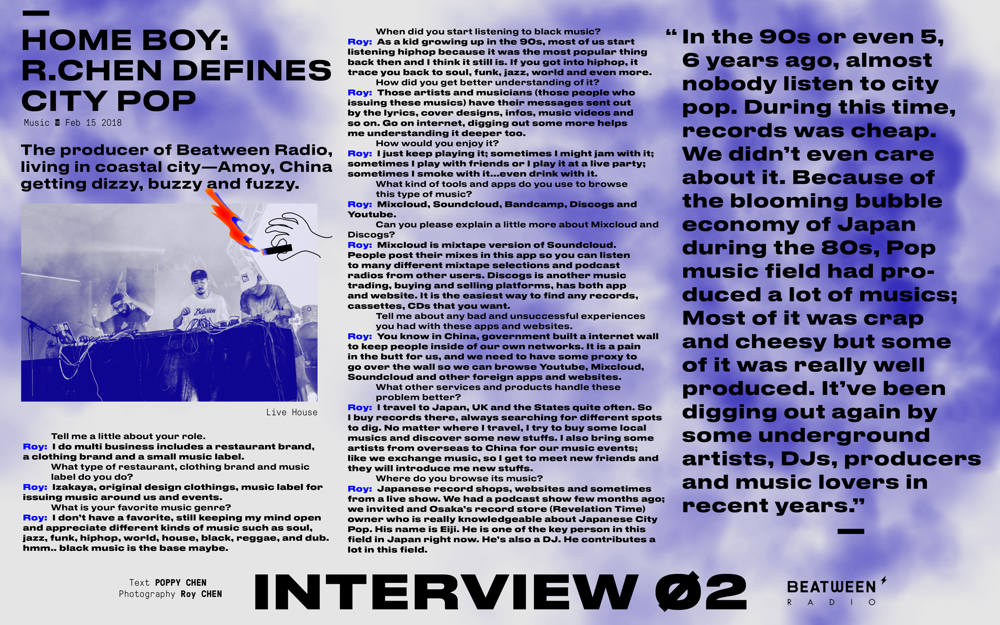
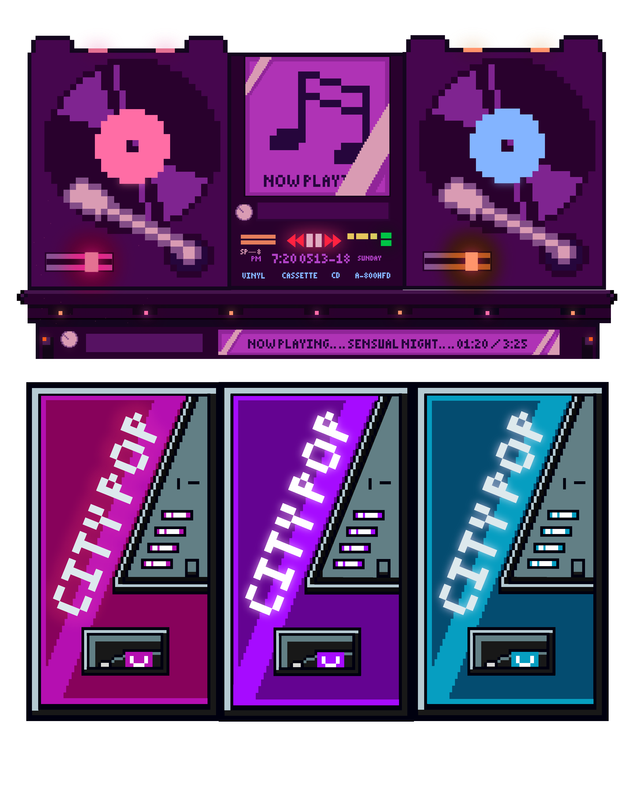
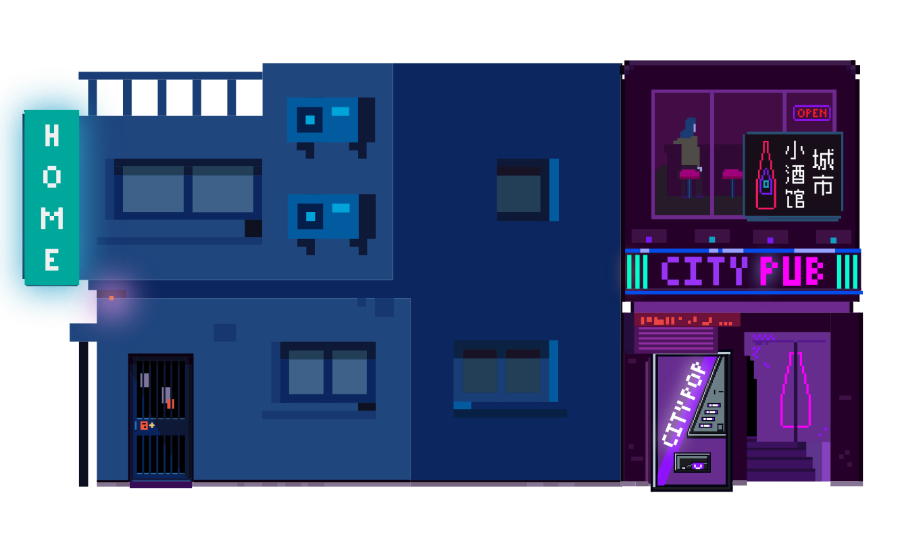

CITY POP
A dreamy trip back to Japan’S Capitalist
fantasy of the 1980’s.
Digital Product Design : App

City Pop is an AOR/Disco/Funk/Jazz fusion genre which beamed out of the car stereos of inner-city Japan throughout the 80’s, existed as the soundtrack to the dream like, optimistic state that the country was enjoying due to the ‘Japanese asset price bubble’- an economic euphoria for Japan existent thanks to its worldwide technological exports throughout the 1970’s.
Selected Interview

CityPop app is the best way to explore
your Japanese City Pop music collection by artists from the 80s to present days. Open your ears to the extraordinary with our online record store and the CityPop Daily.
Catalog Your Collection:
An incredibly simple way to catalog your digitals, vinyl, CDs, and Cassettes collection.
Use your phone’s camera to search for a release by the barcode.
Add and remove items from your CityPop collection on the go.
Track your dream music collection by adding it to your Wishlist.
Compare your collections and see what’s your friends have
Pixel Drawing

